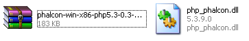
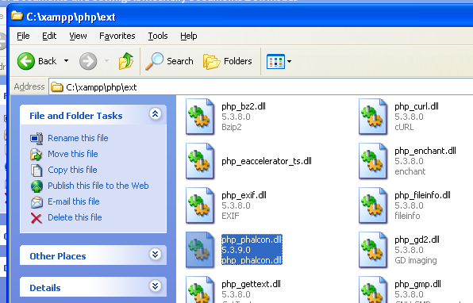
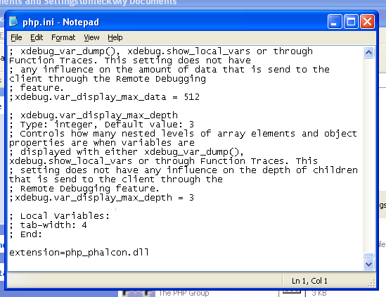
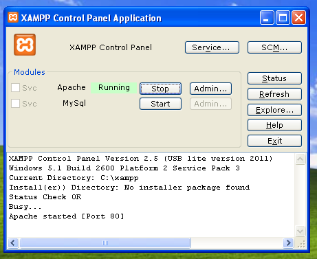
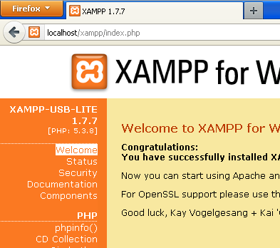
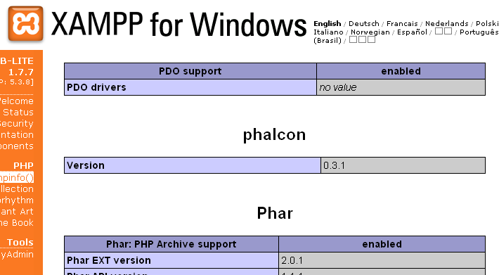

Installation on XAMPP¶XAMPP is an easy to install Apache distribution containing MySQL, PHP and Perl. Once you download XAMPP, all you have to do is extract it and start using it. Below are detailed instructions on how to install Phalcon on XAMPP for Windows. Using the latest XAMPP version is highly recommended. Download the right version of Phalcon¶XAMPP is always releasing 32 bit versions of Apache and PHP. You will need to download the x86 version of Phalcon for Windows from the download section. After downloading the Phalcon library you will have a zip file like the one shown below: ![../_images/xampp-1.png]()
Extract the library from the archive to get the Phalcon DLL:

Copy the file php_phalcon.dll to the PHP extensions. If you have installed XAMPP in the c:\xampp folder, the extension needs to be in c:\xampp\php\ext

Edit the php.ini file, it is located at C:\xampp\php\php.ini. It can be edited with Notepad or a similar program. We recommend Notepad++ to avoid issues with line endings. Append at the end of the file: extension=php_phalcon.dll and save it.

Restart the Apache Web Server from the XAMPP Control Center. This will load the new PHP configuration.

Open your browser to navigate to http://localhost. The XAMPP welcome page will appear. Click on the link phpinfo().

phpinfo() will output a significant amount of information on screen about the current state of PHP. Scroll down to check if the phalcon extension has been loaded correctly.

If you can see the phalcon version in the phpinfo() output, congrats!, You are now flying with Phalcon. Screencast¶The following screencast is a step by step guide to install Phalcon on Windows: |